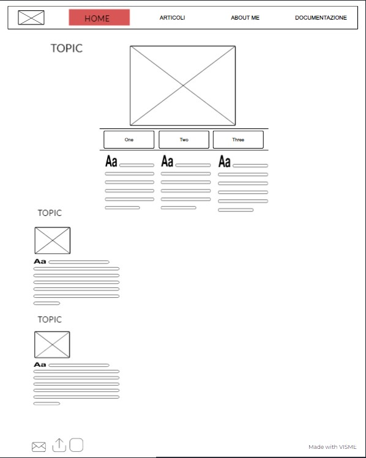
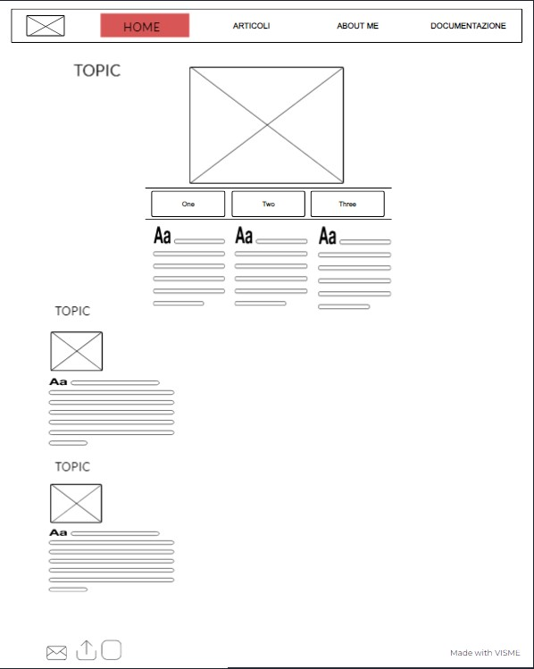

ABSTRACT
Zerocammelli è un sito web di intrattenimento che propone articoli di vario genere e che esordisce con un articolo sulla musica. Il nostro sito è pensato principalmente per un pubblico giovane, compreso tra i 16 e i 30 anni. Il focus del sito sono intrattenimento ed infromazione. L'utente può leggere contenuti, osservare immagini ed interagire con i link inseriti.
PROJECT MANAGMENT PLAN
1. BENCHMARKETING
1.1 obiettivo
Zerocammelli ha l'obiettivo di creare uno spazio di lettura godevole per il pubblico e informare in modo istantaneo e sintetico rigurardo a temi quali arte, musica, cinema e curiosità.
1.2 target
Il sito può essere fruito da chiunque, ma il target a cui punta è un pubblico di giovani adulto compresti tra i 16 e i 30 anni, per via del contenuto degli articoli.
1.3 competitors
I siti web per conoscere artisti e curiosità sono molteplici. I siti più simili sono quelli con un format magazine per esempio Billboard, Vibe magazine e Vice. Gli utenti che esplorano questi siti sono molto simili a quelli di Zerocammelli. Billboard si dedica esclusivamente alla musica, così come Vibe magazine, inoltre sono siti che trattano artisti molto conosciuti, soprattutto americani. Vice Italia è interamente dedicato ad un pubblico italiano, ma gli argomenti trattati sono numerosissimi e dispersivi. Zerocammelli si rivolge ad un pubblico principalmente italiano e cerca di produrre articoli che incuruosisicano per autenticità.
2. STRUTTURA E LAYOUT
 



2.2 look and feel
Il font scelto è Roboto, un font semplice e pulito.
La palette di colori del sito è composta da nero, verde e arancione. Qesti colori sono stati scelti per ricondurre ad una realtà underground, realtà da cui emergono gli artisti discussi nell'articolo. Gli schizzi di colore su sfondo nero rendono à le pagine accattivanti.
Tutti i bottoni sono cliccabili e ad ogni passaggio del cursore viene evidenziata l'azione per conferire ulteriore chiarezza al sito. Ad ogni pagina navigabile sono collegate la home e la barra di navigazione e nelle pagine principali dell'articolo, ovvero le tre pagine degli artisti, è possible passare all'artista successivo o precedente senza passare per forza per la home.
3. LINGUAGGI E STRUMENTI
I linguaggi web utilizzati sono html e css.
Gli strumenti di supporto utilizzati per la progettazione web sono: Bootsrap per la grafica, chatgpt per i codici, We3school per i bottoni, Font Awsome per le icone, Youtube per alcune spiegazioni, Wikipedia e altri siti per alcune ricerche.
COMMUNICATION STRATEGY
1. BACKGROUND
I siti competitors analizzati sono Billboard, Vibe Magazine, Vice Italia e Oa Plus.
Billboard è una rivista settimanale dedicata interamente alla muscia, mentre Zerocammelli ha come obiettivo quello di non trattare esclusivamente di musica. Inoltre Billboard, così come Vibe Magazine trattano di artisti di fama mondiale, mentre Zerocammelli vorrebbe concentrare la ricerca ad una realtà meno chiaccherata.
Vice Italia e Oa Plus sono magazine online che propongono articoli di svariato genere: cibo, arte, politica, psicologia, cronaca nera e persino il GrandeFratello, Zerocammelli vorrebbe invece curare una proposta più selettiva, che si limiti ad arte e piccole curiosità.
Vice ha dichiarato bancarotta nel maggio del 2023, il risultato non è quindi stato dei più efficaci.
a mio parere i magazine che trattano troppi temi risultano sconclusionati e poco chiari.
La discriminante di Vibe Magaze è che gli articoli sono pubblicati esclusivamente in inglese e questo non tiene conto di coloro che l'inglese non lo parlano.
Billboard, per quanto offra alcune tra le classifiche più precise al mondo, tratta solo di musica.
2. OBIETTIVI COMUNICATIVI
L'intenzione di Zerocammelli è quella di creare uno spazio di informazione accesibile a tutti, offerta al pubblico con un linguaggio semplice e comprensibile, con l'obiettivo di diffondere consocenza e curiosità sul mondo dell'arte e della cultura in un ampio spettro, ma limitando il rischio di risultare vago e confusionario.
3. TARGET, AUDIENCE E MESSAGGIO
4.PROMOZIONE
Il pubblico di Zerocammelli è compreso tra i 16 e i 30 anni, il sito è pensato per essere fruito in momento "vuoti" o di relax, per poter leggere qualcosa rapidamente senza dover interrompere la lettura perchè prolissa. Si tratta principalemte di studenti e lavoratori che nei mezzi pubblici o tra un impegno e l'altro si dedicano a brevi letture. Per raggiungere questo pubblco i social (instagram e Facebook) sono una fonte fondamentale, così come il passaparola su WhatsApp e ad eventi o in ambienti frequentati principalmente da giovani, ed è infatti questo il tipo di promozione che il l'admin di Zerocammelli si propone di attuare. Le informazioni offerte all'utente sono semplici e fruibili quitidianamente, l'obiettivo è quello di arrichire l'utente di curiosità poco discusse per aumentare l'autostima del lettore che scopre qualcosa di nuovo e lo comprende all'istante.
5. VALUTAZIONE DEI RISULTATI
Gli obiettivi preposti riguardano: 50 followers sul profilo Instagram di Zerocammelli e 20 visualizzazioni al sito web.